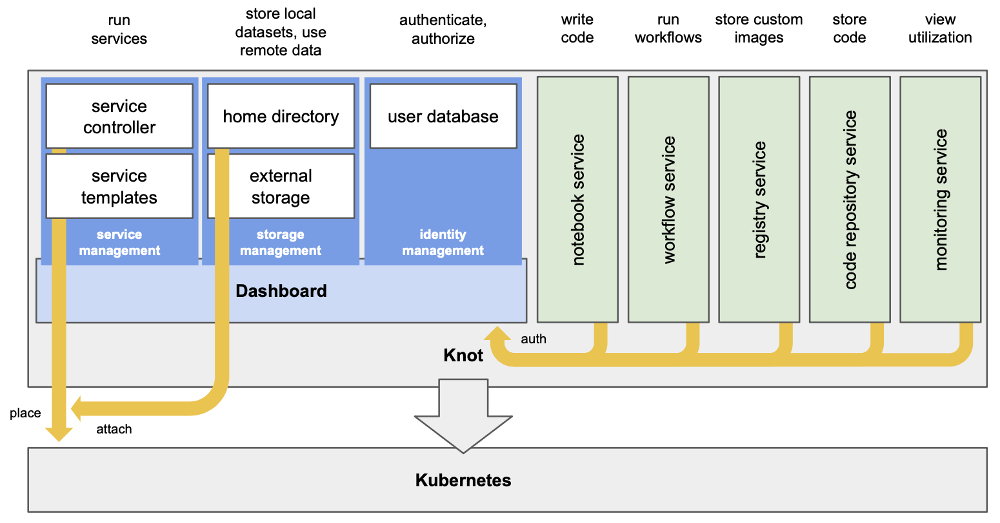

Overview
Knot is a full-featured software stack for facilitating data science in Kubernetes-based environments, by integrating a web-based environment that includes an extensible set of productivity tools and services. At its core, the Knot dashboard supplies the landing page for users, allowing them to launch notebooks and other services, design workflows, and specify parameters related to execution through a user-friendly interface. Knot aims to make it straightforward for domain experts to interact with resources in the underlying infrastructure without having to understand lower-level mechanisms.
The Knot dashboard is an interactive, graphical frontend for users to:
- Switch to any of the included integrations with JupyterHub (notebook service), Argo Workflows (workflow service), Harbor (private container image and and Knot service template registry), and Grafana (metrics service).
- Launch private services or applications from customizable templates.
- Manage files that are automatically attached to service and application containers when launched.
Under the hood, Knot:
- Performs high-level user management and isolates respective services in per-user Kubernetes namespaces.
- Provides an identity service for authenticating users in OAuth 2.0/OIDC-compatible applications.
- Securely provisions multiple services under one externally-accessible HTTPS endpoint.

Knot includes the dashboard, default and custom services. The dashboard provides service, storage, and identity management to the integrated environment.
Kubernetes provides all the tools to do data sharing, create namespaces, etc., but the exact implementation and structure of the overall environment is left to the developer. Knot implements a "traditional" user scheme, which is then mapped to Kubernetes namespaces and service accounts. Kubernetes does not have "users" and no place to "login into" by default.
Knot sets up single sign-on at the integrated instances of JupyterHub, Argo Workflows, Harbor, and Grafana, so authenticated users can seamlessly move between services. In addition, appropriate authorization directives are automatically set up, so that each user will be allowed to access resources only in their corresponding Knot-defined namespace. For Harbor, Knot also fetches the users' CLI secrets, and configures Kubernetes to use them.
Equally important to user management, authentication, and authorization, Knot wires up private and shared storage to predefined paths inside running containers, which significantly simplifies data management. Thus, user files are automatically accessible in all respective execution contexts and also available through the dashboard. A workflow can work on some data which have been prepared in a notebook, while produced results can be easily shared via an externally accesible web server. Inside workflows, data can be exchanged between steps, just by placing it on specific directories.